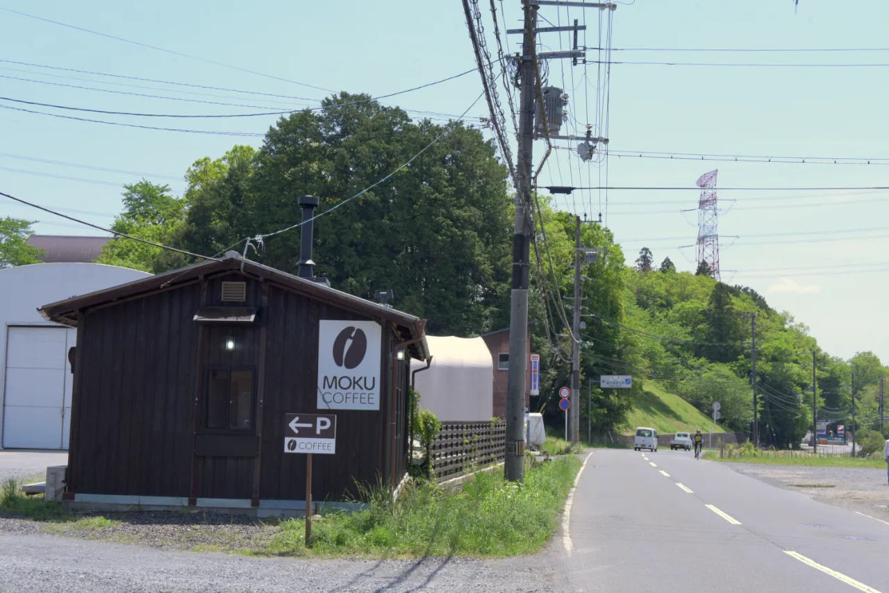
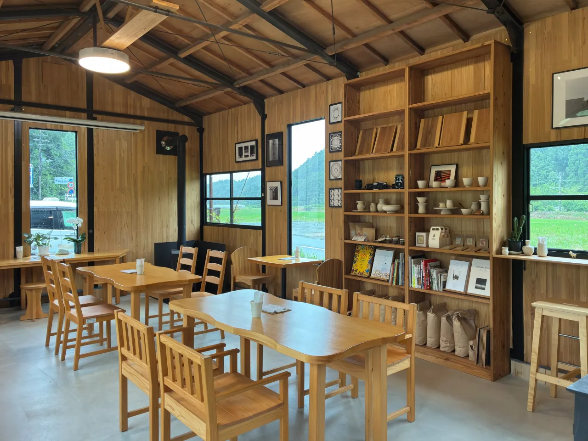
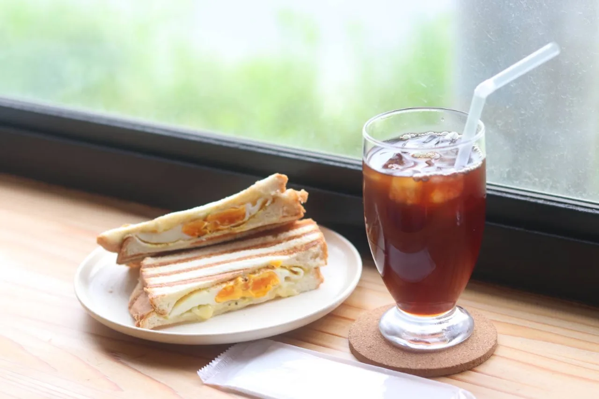

由良川と桂川の分水嶺にあたる、胡麻の高原にある喫茶店です。自家焙煎のコーヒーと手作りのスイーツ、ホットサンドなどの軽食があります。テイクアウトもでき、店舗の裏手に駐車場があります。


| 住所 | 〒629-0311 京都府南丹市日吉町胡麻大戸2-1 |
|---|---|
| 営業時間 | 9:00〜18:00（ラストオーダー 17:30） |
| 定休日 | 木曜（祝日は臨時営業） |
| アクセス | 園部ICから車で約15分／道の駅 スプリングスひよしから車で約10分 |
| 駐車場 | 店舗の裏手に約5台 |
| そのほか | テイクアウトあり |
MOKU COFFEEから歩ける距離に胡麻駅があります。1910年の出来事として、 京都丹波タイムトラベルの札になっています。
この札を年表で見る距離は地図上の直線距離です。
A coffee shop on the Goma plateau, on the watershed between the Yura and Katsura rivers. House-roasted coffee, homemade sweets and light meals such as hot sandwiches. Takeaway available, with parking behind the shop. Open 9:00-18:00, closed Thursdays.